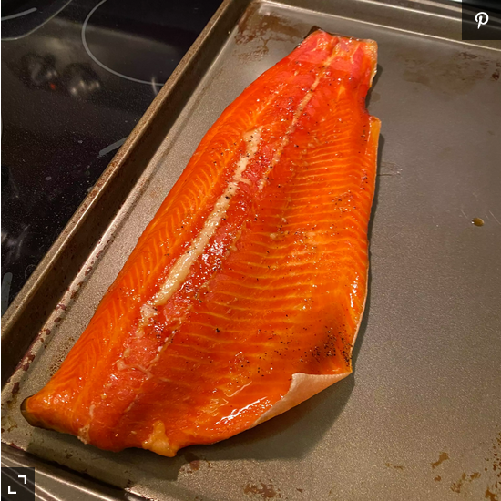

Smoked Salmon recipe Recipe

Description
This is an amazing recipe for making a delicious smoked salmon
Ingredients
- 1.5 cups brown sugar, divided
- 1 cup kosher salt
- 3 pounds salmon fillets
- .5 cup honey
- 2 (12 fluid ounce) cans or bottles cola-flavored carbonated beverage (such as Coca-Cola®) (Optional)
- 5 drops hot pepper sauce
- 3 cups wood chips, soaked
Steps
- Mix 1 cup brown sugar and kosher salt together in a small bowl.
- Spread a thin layer of the brown sugar mixture in the bottom of a 9-inch baking pan. Arrange 2 to 3 salmon fillets on top; cover with some of the brown sugar mixture. Repeat layers until all the salmon fillets are coated. Cover with plastic wrap and refrigerate, 8 hours to overnight.
- Preheat a smoker to 195 degrees F (91 degrees C) according to manufacturer's instructions.
- Rinse brown sugar mixture off salmon fillets. Brush fillets lightly with honey and sprinkle remaining 1/2 cup brown sugar on top.
- Pour cola-flavored beverage into the smoker's water pan; add water to within 1 inch of the top. Place half of the wood chips around the perimeter of the hot charcoal. Place salmon on the cooking racks.
- Cook salmon, adding more wood chips if needed, until an instant-read thermometer inserted into the center reads 145 degrees F (63 degrees C), about 2 hours. Cool before serving, at least 15 minutes.